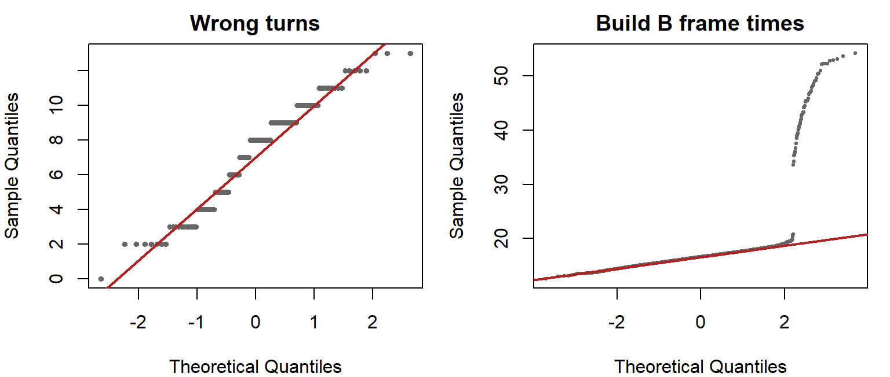

# Type I: two samples from the same population, tested 2,000 times
pop_wt <- rep(sessions$wrong_turns, times = 1000)
mean(replicate(2000, t.test(sample(pop_wt, 30), sample(pop_wt, 30))$p.value < 0.05))
# Power: samples of n from each real build, tested 2,000 times
power_at <- function(n) {
mean(replicate(2000, t.test(sample(wt_a, n, TRUE), sample(wt_b, n, TRUE))$p.value < 0.05))
}
sapply(c(5, 10, 15, 30), power_at)Testing in Depth
Errors and power, many tests at once, Q-Q plots, and a shuffle for any summary
Going further. This page extends Comparing Groups. Nothing here is needed for the labs or the assessment. Read it when you are planning how many players a playtest needs, when you are tempted to test every survey item, or when the mean is the wrong thing to compare.
Two Ways to Be Wrong
A test makes a decision from incomplete information, so it can be wrong in two directions.
| The build really makes no difference | The build really makes a difference | |
|---|---|---|
| Test says “significant” | Type I error: a false alarm | Correct |
| Test says “not significant” | Correct | Type II error: a missed effect |
A Type I error is acting on a difference that is not there: rebuilding a level because of a fluke. Its rate is α. To check, draw two groups of 30 from the same population of wrong turns, so there is no real difference, and test them two thousand times: 5.3% come out significant, close to the 5% that α = 0.05 promises.
A Type II error is missing a difference that is there: shipping a build with a problem because the playtest was too small to see it. The chance of avoiding it is the test’s power. Power grows with sample size. Drawing playtests of different sizes from Tidebreak’s real Build A and Build B sessions, and counting how often the t-test detects the signposting effect:
| Sessions per build | 5 | 10 | 15 | 30 |
|---|---|---|---|---|
| Chance of detecting the effect | 44% | 78% | 94% | >99% |
Even this large effect is missed more often than not with five sessions per build. A smaller effect needs far more players. Plan the playtest size around the smallest difference that would change your decision, which is the “how many players” question from Planning a Playtest, now with numbers.
The two errors trade off. A stricter α, such as 0.01, means fewer false alarms and more missed effects. Which mistake is worse depends on the decision: a false alarm that costs a week of rework, or a missed problem that ships to every player.
Testing Many Things at Once
At α = 0.05, each test on a difference that is not real has a 5% chance of a false alarm. Run several and the chances add up. With eight independent tests, the chance that at least one comes up significant by luck alone is 1 − 0.95^8 = 34%.
The Tidebreak survey has 8 items. Testing each one by build:
sv <- merge(survey, sessions[, c("session_id", "build")])
round(sort(sapply(names(survey)[-1],
function(i) t.test(sv[[i]] ~ sv$build)$p.value)), 3) objective_clear controls_responsive death_understood match_length
0.000 0.150 0.257 0.273
difficulty_fair level_navigable visual_style would_play_again
0.724 0.854 0.884 1.000 One item, objective_clear, is significant. Is it real, or the one-in-three false alarm? Three things say real. It survives the simplest correction, Bonferroni: divide α by the number of tests, here 0.05 / 8 = 0.0063, and its p-value is still below that. It was the item the team expected to move, written down before the test. And it agrees with the telemetry: Build A had the frustration quits.
The defence is to decide in advance. Name the comparisons that answer your question before you run any of them. A result you went looking for after scanning twenty tests needs a second playtest before anyone acts on it (rule 1).
Q-Q Plots and the t-Test
A t-test assumes the means are roughly normal. With a few dozen players per group that is nearly always true, thanks to the central limit theorem (Sampling Theory). A Q-Q plot is the standard visual check on the data itself. Close to the line means close to normal:
op <- par(mfrow = c(1, 2), mar = c(4, 4, 2, 1))
qqnorm(sessions$wrong_turns, main = "Wrong turns", pch = 19, cex = 0.6,
col = pal$line)
qqline(sessions$wrong_turns, col = pal$highlight, lwd = 2)
b_ms <- frames$ms[frames$build == "B"]
qqnorm(b_ms, main = "Build B frame times", pch = 19, cex = 0.4, col = pal$line)
qqline(b_ms, col = pal$highlight, lwd = 2)
par(op)
Strong outliers and a mismatched design matter far more than normality, and no amount of data fixes the wrong design.
A Shuffle for Any Summary
The permutation test on the notes page shuffled the build labels and recomputed a difference in means. Nothing about the shuffle needs a mean. Replace it with any summary that answers your question, and the logic is unchanged. That makes it the fallback when the mean is the wrong thing to compare.
Frame times are the case. The question is not “is Build B’s average frame slower?” but “is Build B’s worst one per cent slower?”. In the Corridor:
corr <- frames[frames$zone == "Corridor", ]
p99_gap <- function(ms, g) quantile(ms[g == "B"], 0.99) - quantile(ms[g == "A"], 0.99)
observed <- p99_gap(corr$ms, corr$build)
set.seed(9)
shuffled <- replicate(2000, p99_gap(corr$ms, sample(corr$build)))
observed 99%
29.1245 mean(abs(shuffled) >= abs(observed))[1] 0Build B’s 99th percentile in the Corridor is 29.1 ms slower than Build A’s, and none of 2,000 shuffles produced a gap that large: the hitch is not chance. A t-test on the same frames would answer a different question, about the mean, which is the one that hides the hitch.